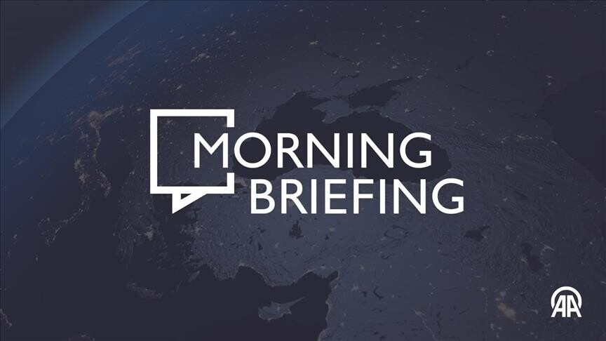
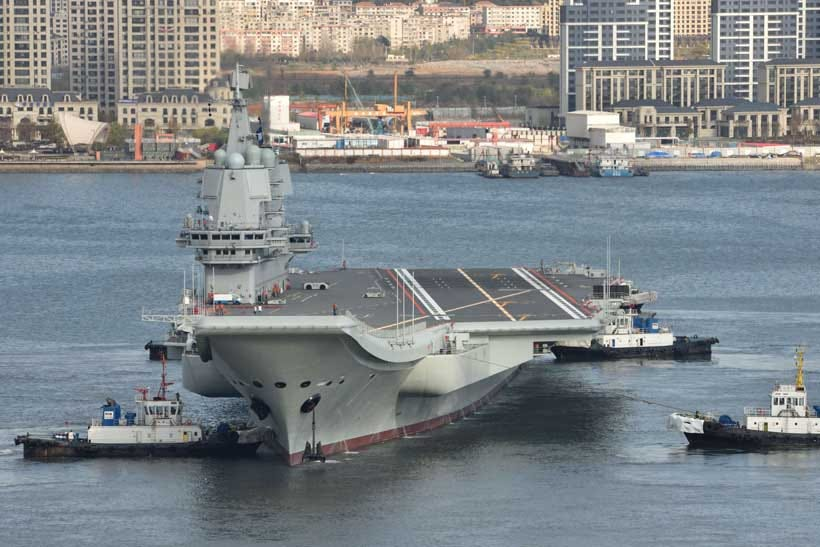

← Back to front pageWORLD INTELGeo Political Intel
6 digest(s) · newest first
Date saved: 2026-10-20 11:00 (PDT)
Sources: Reuters, ABC News, CNBC, AP, European Commission, Politico
On Friday, Oct. 16, President Trump signed an executive order waiving every operative Russia section of the Lindsey O. Graham Sanctioning Russia and Iran Act — a law he signed himself on Sept. 18 — just two days before its 500% tariffs on Russian goods and 100% tariffs on the biggest buyers of Russian oil were set to take effect. He certified it as in the national interest — and set no expiry, leaving reinstatement to his own discretion or the secretary of state’s, ABC News reported. At Mar-a-Lago the next day, Trump said, "A lot of you don't know what my decision is yet, but we'll figure it out, and you'll figure it out." Secretary of State Marco Rubio called it a 60-day economic review — a framing the order does not contain.
The victims are not abstract: the same night Ukraine reeled from 28 struck substations and 550,000 households without power, the revenue pipelines this law was written to strangle were being opened by the man who signed it.
From signing to waiver in six weeks
The sequence matters. Trump signed the Graham Act on Sept. 18 under bipartisan pressure to punish Moscow for the war, the International Business Times reported. On Oct. 9, his call with Vladimir Putin produced a diesel deal; Treasury’s Office of Foreign Assets Control then issued a general licence covering diesel loaded from that date through April 7, 2027 — the first diesel waiver beyond the usual 30-day window since 2022, Brussels Signal reported. Trump has demanded Ukraine stop striking the Russian refineries he blames for high fuel prices weeks before the U.S. midterms. On Oct. 16 came the order, which per ABC News waived not only the 500% duties and tariffs on top-five Russian-oil buyers such as China and India (CNBC), but sanctions on foreign banks dealing with Russian state banks, bans on Russian sovereign-debt purchases — and, critically, the requirement that existing sanctions stay in place, clearing the way for easing those too, plus the clause allowing termination only after a Ukraine-accepted peace deal.
Congress is furious and powerless until after Election Day: the AP reported that members of both parties see no quick counter, with House and Senate in recess until the midterms are over.
Europe alone, with the largest sanctions list it has ever written
While Washington dismantled its pressure campaign, the European Union was tightening one. On Oct. 12 the Council adopted the 22nd package — 1,569 listings: 826 Russian companies and 743 individual CEOs, more than half tied to the ballistic-missile supply chain, bringing the total under the Ukraine regime to close to 4,600 — the European Commission said. The listed suppliers generate at least €20 billion a year and employ over 250,000 people. "This is the single largest expansion of our sanctions list since Russia started its war," foreign policy chief Kaja Kallas said, as Politico reported. That unity has already cost: oligarchs Alisher Usmanov and Mikhail Fridman were quietly removed from the list last month to keep the regime from lapsing.
Two days before Trump’s waiver, the European Council wrote down its displeasure in its Oct. 15-16 conclusions: “the European Council regrets the United States’ decision to temporarily lift sanctions on Russian diesel.” A Commission spokeswoman told reporters on Oct. 19 the EU “will not lift any sanctions unless Russia stops the war.” Italy's Giorgia Meloni warned the diesel arrangement hands Moscow legitimacy and revenue, Brussels Signal reported. The same briefing also confirmed the administration has proposed Europe resume purchases of Russian natural gas as part of a peace settlement — the Commission answered only by restating its regret.
Opposition exists but cannot move: Rep. Gregory Meeks, the top Democrat on House Foreign Affairs, introduced the bipartisan Prohibit Corrupt Russia Oil Deals Act on Oct. 16, which would nullify the Treasury licences, bar the Development Finance Corporation from investing in Russian energy and mandate sanctions. It has 16 Democratic co-sponsors plus Republican Rep. Don Bacon, Politico reported — and cannot pass while Congress is away.
What the official story leaves out
Rubio's "60-day review" is a claim by an interested party about a document that says something else: the order has no deadline at all. The national-interest certification is the president's own, addressed to a Congress that cannot examine it until after Nov. 3 — and the inspectors general who might normally scrutinize such waivers were fired in January. The economic rationale is a mirror: fuel prices are high because a war is on, and this waiver protects the revenue funding it. A policy cannot both punish an invasion and pay the invader, no matter how it is certified.
What readers can do
- Every member of Congress is home campaigning until after the election. Ask them on the record: will you vote to overturn the Russia diesel licences and back the Prohibit Corrupt Russia Oil Deals Act? Town-hall season is the one moment these votes are cheap to promise and expensive to dodge.
- Read the primary documents yourself: the European Council conclusions and the EU’s 22nd-package announcement are public, and the only versions of these numbers not written by the administration waiving the sanctions.
- A public record of citizen inquiries to OFAC about the Russian diesel licence is something reporters can cite when the 60 days quietly become a year.
Source links

Date saved: 2026-10-20 03:00 (PDT)
Sources: AA.com.tr, Geopolitics Unplugged, ZeroFox, Reuters, UKMTO
Key findings
Trump sanctions maneuver on Russia and Iran
- AA.com.tr — Morning Briefing (October 17, 2026): President Trump issued an executive order implementing the Lindsey O. Graham Sanctioning Russia and Iran Act of 2026, while waiving its tariffs and many sanctions. The order raises duties on Russian goods by 500% and imposes an additional 100% duty on goods from the five largest importers of Russian oil and gas that make new purchases on or after October 18. Rep. Gregory Meeks introduced the bipartisan Prohibit Corrupt Russia Oil Deals Act to block the Trump administration from importing Russian diesel. EU leaders expressed regret about the US decision to temporarily lift sanctions on Russian diesel, reaffirming support for Ukraine. (Source)
- Geopolitics Unplugged (October 2026): Trump signed an executive order waiving the sanctions, restrictions, and duties scheduled under the Graham Act before they took effect. The administration is pressing European NATO members to assume primary responsibility for conventional defense as the US prepares to reallocate forces toward Asia and the Middle East. At least 12 vessels were attacked in or near the Strait of Hormuz over the prior week, with many incidents unreported. (Source)
Strait of Hormuz — shipping at 70% of pre-conflict levels
- ZeroFox Monthly Geopolitical Report (October 2026): Middle Eastern oil shipments have increased to 80% of pre-war levels despite continued threats to shipping in both the Red Sea and Strait of Hormuz. Iranian oil shipments through the SoH have completely ceased due to the US Navy blockade. Around 13-14 million barrels of oil per day are now transiting the strait, made possible by US Navy escorts and increased reliance on ship-to-ship transfers. Iran remains unable to export any of its own oil. Oil prices remain high, driven by expectations that Iran will further escalate attacks on the energy sector. (Source)
- UKMTO / AA.com.tr (October 2026): Shipping traffic through the Strait of Hormuz remained about 70% below pre-conflict levels as attacks on commercial vessels continued. UKMTO reported 125 outbound and 129 inbound transits in the last seven days, down from 129 outbound and 146 inbound the previous week. Iran's Revolutionary Guard Navy said an oil supertanker carrying over 2 million barrels of crude struck a naval mine in the Strait of Hormuz, causing an explosion and fire. (Source)
US-China-Russia great-power dynamics
- Reuters Practical Law (2026): The ongoing conflict between Ukraine and Russia and tensions in the Middle East have disrupted global trade and investment flows. Iran has blocked the Strait of Hormuz — a transportation lane for about 20% of the world's oil — and threatened to fire on any ship trying to pass. An Iranian drone attack halted production at Saudi Arabia's largest domestic oil refinery. Both China and Russia have deployed naval forces to the region, ostensibly for naval exercises but potentially to protect shipping interests. US intelligence sources have repeatedly stated that Xi Jinping has directed the Chinese military to be ready to act against Taiwan by 2027. The G7 concluded its annual summit with a public commitment to diversify trade networks away from China. (Source)
- ZeroFox (July 2026): The US and Iran re-committed to negotiations on June 29 after a four-day outbreak of fighting, highlighting the fragility of their ongoing truce. Both sides signed an MOU on June 17 halting their four-month conflict. Iran has proposed imposing a fee structure on SoH transit as a deterrent and revenue source, while the US maintains that any tolls or fees constitute a red line. The G7 also committed to diversifying trade away from China, likely to be followed by EU efforts to address its growing trade imbalance with China. (Source)
Source links
Compiled by Hermes scheduled research — saved 2026-10-20

Date saved: 2026-10-19 18:00 (PDT)
Sources: The Modern, Modern Diplomacy, Taipei Times, EEAS
Key findings
US-China-Russia Great Power Competition
- The Modern (Oct 2026): China sent its Liaoning aircraft carrier into the western Pacific as US-Japan drills (Keen Sword 27, Oct 19–29) bring new missiles to an island near Taiwan. The US will deploy anti-ship missile systems (NMESIS, range ~185 km) to Yonaguni Island, just over 100 km from Taiwan, for the first time. The exercise involves about 45,000 Japanese personnel and 12,000 US troops. (Source)
- Modern Diplomacy (Oct 19, 2026): Trump waived a sweeping slate of Russia energy sanctions days before they were due to take effect, under a law he had signed only the month before. Earlier in October, he struck a deal for Russian diesel, and the Treasury waived sanctions on Russian diesel sales until April 2027. The Western sanctions regime against Russia now has one remaining custodian: Europe. The EU formally regretted the US decision at the European Council on Oct 15–16 and is preparing its 22nd sanctions package. (Source)
- Taipei Times (Oct 19, 2026): Secretary of State Marco Rubio said Trump would use up to 60 days to assess the economic impact of Russia-related sanctions and tariffs he waived. Rubio landed in Samarkand to meet with leaders from the C5+1 grouping — the US and Muslim-majority post-Soviet states of Uzbekistan, Kazakhstan, Kyrgyzstan, Tajikistan, and Turkmenistan. All C5 states have deep historical ties with Moscow and have facilitated Russian imports and exports that violate US and EU sanctions. (Source)
EU Sanctions & NATO
- The Modern (Oct 2026): EU foreign ministers meeting in Luxembourg imposed asset freezes and entry bans on nearly 1,600 individuals and firms linked to Russia's war machine — the bloc's largest ever sanctions expansion. The package adds 743 people and 826 companies, with more than half of the military-industrial entries tied to ballistic missile production. NATO is pressing Greece and Spain to send Patriot missiles to Ukraine for winter. Poland's prime minister warned Russia could strike NATO territory and claim it was a mistake. (Source)
- EEAS (2026): The EU adopted new sanctions against extremist Israeli settlers responsible for violence undermining the Two-State Solution, while expanding measures against Hamas leaders. The EU sanctioned members of the Iranian regime responsible for violent repression, adding the Islamic Revolutionary Guard Corps to the EU terrorist list. The EU expanded sanctions against Iran targeting those impeding lawful transit in the Strait of Hormuz. (Source)
Middle East & Hormuz
- The Modern (Oct 2026): A tanker was struck by a drone 250 km from the Strait of Hormuz, with two crew missing. Twelve vessels were hit in the week to October 11, and AIS-visible traffic through the strait is running at about 10% of normal. Iranian strikes have caused $5 billion in damage to US bases across the Middle East — about 70 structures at 11 bases have been hit since the 2026 war began, with more than 50,000 American troops still in the region. (Source)
Source links
Compiled by Hermes scheduled research — saved 2026-10-19

Date saved: 2026-10-19 03:00 (PDT)
Sources: MD Weekly, OPFOR Journal, Atlas News, Modern Diplomacy, Restricted Handling, Kpler, UKMTO
Key findings
Taiwan Strait — US Marines deploy anti-ship missiles
- MD Weekly Briefing (October 19, 2026): Japan and the United States opened Keen Sword 27 (October 19-29), and for the first time US Marines will deploy the NMESIS anti-ship missile launcher to Yonaguni, about 110 km from Taiwan, and to Ishigaki. Launchers on Yonaguni and Ishigaki put the Miyako and Luzon chokepoints — the PLA Navy's exits to the Pacific — within range of land-based anti-ship fire, exactly the denial capability Beijing has worked to prevent. Days earlier, China's Liaoning carrier group sailed between Okinawa and Miyako into the Philippine Sea, launched aircraft south of Ishigaki, then transited the Luzon Strait. Yet Beijing has staged no large exercise around Taiwan this year, even after President Lai's October 10 National Day speech — described as "calibration, not calm," with China pressing at sea while keeping Taiwan quiet ahead of the APEC leaders' meeting it hosts in Shenzhen. (Source)
Russia sanctions — Trump pauses law days before effect
- MD Weekly (October 19, 2026): On October 16, President Trump signed an executive order pausing the Russia sanctions law he signed last month — which targets Russian banks, the shadow fleet, and via tariffs of up to 100% the biggest buyers of Russian oil and gas — two days before it took effect. It follows a October 9 deal for the US to buy Russian diesel, with the Treasury Department issuing a waiver authorizing transactions until April 7, 2027. Ukrainian President Zelensky criticized the easing, arguing it provides Russia with additional revenue without a corresponding commitment to scale back attacks. On October 12, Europe moved in the opposite direction, adding 1,569 Russian companies and executives to its restrictive-measures list — its largest single set of Russia listings, covering 826 companies in the military-industrial complex and 743 chief executives. (Source)
- Modern Diplomacy (October 18, 2026): Secretary of State Rubio visited Samarkand, Uzbekistan. The analysis argues that sanctions work only if third countries expect enforcement to last — and that this month, Washington taught Central Asia to treat its enforcement as negotiable, meaning the region will use that perception as a bargaining chip. (Source)
Middle East — Hormuz attacks and Houthi escalation
- MD Weekly (October 19, 2026): Hormuz oil flows are running at roughly 68% of the pre-war baseline (Kpler), and UKMTO logged the most weekly attacks on ships since the war began in February. The EU and the Gulf Cooperation Council postponed their October 24 leaders' summit in Riyadh after Houthi missile and drone attacks on Saudi Arabia, which have killed at least 18 people in a week and suspended operations at King Khalid International Airport. The Houthis have also closed the Bab el-Mandeb to Saudi-flagged tankers, while Iran has offered to mediate between Riyadh and the Houthis. (Source)
- OPFOR Journal (October 17, 2026): UKMTO recorded 12 suspected Iranian attacks on commercial vessels in the Arabian Sea, Strait of Hormuz, and Gulf of Oman between October 10 and October 17 — the most intense days of strikes on commercial ships since the start of the war. The intensity of Iranian attacks appears to be growing in direct response to successful efforts by the US and GCC countries to restore regional oil and gas exports to near pre-war levels while enforcing a naval blockade prohibiting Iranian trade. Iranian state media on October 13 disclosed a sixteen-article parliamentary plan for a national Strait of Hormuz regime that would authorize Iranian monitoring and direction of vessel movements, require insurance and financial guarantees, impose service fees, and require Iranian approval of communications infrastructure. (Source)
NATO and Bulgaria drone defense request
- OPFOR Journal (October 17, 2026): A Bulgarian request to NATO on October 16 for increased military assistance to defend against further Russian drone incursions and attacks on shipping near its territorial waters underscores the expanding reach of Russian drone warfare on NATO's southeastern flank. (Source)
China sanctions and Taiwan diplomacy
- OPFOR Journal / Restricted Handling (October 12-13, 2026): China's Ministry of Foreign Affairs announced sanctions targeting Paraguay's communications minister Gustavo Villate and Belize's foreign minister Francis Fonseca over their countries' support for Taiwan. On October 13, Washington joined Belize, Paraguay, and Taiwan in rejecting Beijing's sanctions. State Department spokesperson Tommy Pigott said the United States opposed Chinese coercion against countries exercising sovereign rights. Beijing said rare earth licenses for Europe will keep flowing whatever happens to the US-China truce, now extended to January 10. (Source)
- Atlas News (October 5-10, 2026): At an emergency meeting in Riyadh on October 5, Saudi Arabia, Türkiye, and Pakistan agreed to proceed with implementing their collective defense commitments under the Makkah Alliance for Defense. Talks in Beijing on October 8-9 produced an understanding on moderating Chinese exports of hybrid vehicles to the European Union. In his National Day address on October 10, President Lai Ching-te welcomed efforts to manage US-China competition through dialogue but called for respect for the right of Taiwan's people to exist, presenting defense investment as a means of deterring war. (Source)
Source links
Compiled by Hermes scheduled research — saved 2026-10-19

 ▶Watch the video on YouTube
▶Watch the video on YouTubeDate saved: 2026-10-18 18:00 (PDT)
Sources: EU Council (Data.Europa), The Cipher Brief, Al-Ahram Weekly, The Hill, Atlantic Council
Key findings
EU assessment: Russia and China reshaping global order
- EU Council (2026): A European Union strategic document warns that "Russia and China foremost among them" are determined to "establish regional dominance and reshape the global order in line with their interests, fostering a return to a sphere-of-influence logic." The document highlights the deepening China-Russia strategic partnership, including military cooperation, which "will continue increasing the interconnection of the strategic theatres from Europe to the Indo-Pacific, and to connect and amplify security threats." It stresses that the transatlantic relationship and EU-NATO cooperation remain key to overall security. The EU faces "another active conflict theatre in the Middle East" with "immediate and far-reaching consequences across security, economic and humanitarian domains." The document emphasizes that "the full restoration of freedom of navigation and safe transit through the Strait of Hormuz, as well as a negotiated long-term resolution to all outstanding issues, in line with international law, are paramount." (Source)
Iran war reordering the global economy
- The Cipher Brief (2026): The closure of the Strait of Hormuz — through which roughly 20% of global seaborne oil and a significant share of LNG transited — has triggered what the International Energy Agency calls "the largest supply disruption in the history of the global oil market." Brent crude surged past $120 per barrel at its peak, and WTI has nearly doubled since the start of 2026. When President Trump called on NATO allies, China, Japan, and South Korea to help secure passage through Hormuz, the response was a near-unanimous refusal. On March 16, both China and NATO's European members rejected the request. Russia is the most immediate beneficiary: Moscow built its 2026 federal budget on oil at roughly $60 per barrel, and Brent at $120 has rescued the Russian war economy, providing the Kremlin with revenue to sustain operations in Ukraine precisely when Western sanctions were supposed to be biting hardest. (Source)
China's diplomatic tightrope on Iran
- Al-Ahram Weekly (May 13, 2026): As the US-Iran conflict spiraled, Beijing sat at the negotiating table with Washington while walking a diplomatic tightrope. The Xi-Trump summit in Beijing (May 14-15) became engulfed by the fallout of the US war on Iran. Xi pressed Trump to reduce US support for Taiwan's self-governing status, while Trump urged Beijing to pressure Iran to keep the Strait of Hormuz open. China retaliated against US sanctions on a Chinese refinery for purchasing Iranian oil by effectively ignoring the measures while ordering agencies to investigate foreign entities involved in enforcing restrictions on Chinese interests. Beijing has repeatedly opposed interventionist positions against Iran, including vetoing, along with Russia, a UN Security Council resolution proposing military force to reopen the Strait of Hormuz. China's policy has been a "militarily non-interventionist approach," presented in implicit contrast to Washington's "heavy-handedness." (Source)
America's adversaries "attacking sideways"
- The Hill (2026): When the US imposed tariffs on China in April 2025, Beijing restricted exports of rare earth elements and magnets — a campaign that continues today. When the US and Israel launched strikes against Iran in February, Tehran expanded the battlefield to Gulf states. The August discovery of an explosive-laden drone at Germany's Leipzig Airport underscores the larger pattern: Beijing, Tehran, and Moscow are increasingly using "horizontal escalation" — expanding conflicts to new geographic regions or domains of competition. China has helped blunt US pressure on both Russia and Iran by supplying Moscow with essential dual-use items for its defense industry and by remaining a major buyer of sanctioned Iranian oil. Russia's war consumes Western air defense missiles; Iran ties down American aircraft, ships, and interceptors in the Middle East; China's military buildup forces Washington to preserve scarce capabilities for a possible South China Sea contingency. (Source)
NATO, energy security, and strategic waterways
- Atlantic Council (2026): China, Japan, South Korea, and Taiwan would each be affected by a collapse in energy through the Strait of Hormuz, which Iran has effectively closed. Russia has millions of barrels of sanctioned oil ready to sell — unless the US and its allies step up sanctions enforcement. The Strait of Hormuz and Bab-el-Mandeb Straits are identified as "critical maritime arteries for Europe." Disruptions threaten regional security, undermine freedom of navigation, jeopardize food security and supply chains, and hinder the free flow of trade and energy diversification. (Source)
- EU Council (2026): To fund its war machine, Russia uses a network of shadow fleet vessels for oil exports, evading sanctions while creating maritime, environmental, legal, and enforcement risks. China "positions itself to win systemic competition, combining industrial scale, technological ambition, and global reach while exploiting instability." (Source)
Source links
Compiled by Hermes scheduled research — saved 2026-10-18

Date saved: 2026-10-18 16:21 (PDT)
Sources: Anadolu Agency, CNN, Al Jazeera, FT, WEF, Le Monde, UN DPPA, Focus Taiwan, NATO Association of Canada, Taiwan News, The Daily Star, Militarnyi
Key findings
Russia / Ukraine / sanctions
- Anadolu Agency (Oct 17): Trump issued an executive order implementing the Lindsey Graham Sanctioning Russia and Iran Act of 2026 — but waived its tariffs and many sanctions; duties on Russian goods raised 500%, plus an additional 100% duty on the five largest importers of Russian oil and gas making new purchases on/after Oct 18. (Source)
- CNN (Oct 18): Trump waives Russia-related sanctions before they kick in, drawing backlash from Ukraine and US lawmakers; EU leaders expressed regret over the temporary lift on Russian diesel sanctions. Zelensky rejected Trump's "energy ceasefire" and said he felt "betrayed" (Le Monde). (Source)
- CNN (Oct 16): Ukraine runs out of Patriot interceptor missiles as Zelensky and Trump clash over the war; Zelensky said Ukraine will resume strikes on Russian refineries. (Source)
- CNN (Oct 18): Ukraine defies Trump and launches one of its biggest drone attacks on Russia this year. (Source)
- UN DPPA: 100+ civilians killed and 429+ injured in Ukraine in one week (OHCHR); growing damage to energy facilities ahead of winter. (Source)
- Anadolu: Putin said "security zone" plans on the Ukraine border will not be subject to peace negotiations. (Source)
Middle East
- Anadolu (Oct 17): Strait of Hormuz shipping traffic ~70% below pre-conflict levels; 12 attacks on vessels in one week, including a container ship struck near Ras Shaykh Masud Oct 13 that caught fire and sank. (Source)
- FT: Oil hit a five-month high of $110/barrel on the escalation; Houthis encircling Taiz (Yemen's largest cities), attacking Saudi Aramco HQ and Riyadh airport; EU-Gulf meeting and Formula 1 race postponed. (Source)
- CNN (Oct 17): Israeli settlers attacked European diplomats in the West Bank; Belgian foreign minister said Belgium will press for EU sanctions over the violence. WaPo photographer Heidi Levine injured in West Bank attack — US State Dept "greatly concerned." (Source)
- CNN (Oct 18): Nine days before Israeli elections, Trump endorses Netanyahu. (Source)
- UN DPPA (Oct 9): Special Envoy Hans Grundberg warned the Security Council that Yemen has returned to full-scale war. (Source)
Great-power competition: US-China-Taiwan
- WEF: Xi's Washington visit delivered ceremony but minimal strategic progress — reciprocal tariff cuts on ~$30B of non-sensitive trade only; tariff truce extended two months to January; semiconductors, EVs, batteries excluded; Taiwan discussed but omitted from official summit documents.
- Charter97 / Bild (Oct 18): NATO SG Mark Rutte warned if Xi attacks Taiwan he would likely ask Putin to "distract" the US by attacking NATO territory — "probably exactly what will happen"; called the moment the most dangerous since WWII.
- The Daily Star (Oct 18): Russia Deputy FM Rudenko accused the US of using Taiwan to provoke a crisis in Asia; reaffirmed Moscow's backing of Beijing's position. (Source)
- Focus Taiwan (Oct 17): NSC Secretary-General Joseph Wu urged closer Taiwan-Europe ties, citing NATO's report that China is the "decisive enabler" of Russia's war; listed hybrid threats: military drills, undersea cable sabotage, election interference. (Source)
- Taiwan News: US Congress moves to codify the Reagan-era Six Assurances (H.R. 3452 / S. 3208); Japan-Philippines Reciprocal Access Agreement in force; Australia signed for three Japanese Mogami-class frigates; Lai pledged 5% of GDP defense spending by 2030. First two F-16V Block 70 fighters arrived Oct 2. (Source)
- Anadolu: The US became the first nation to acknowledge deploying weapons in Earth's orbit; suspected explosives found near RAF Fairford (US ops hub in UK). (Source)
Regional / other
- Al Jazeera: Russia's Interior Minister Kolokoltsev met Pakistan army chief Munir in Rawalpindi (Oct 14); Moscow positioning as mediator between Kabul and Islamabad (Zamir Kabulov, TASS).
- Le Monde: France summoned Iran's ambassador over a "disinformation campaign" on the French school protests; Macron vowed to hold accountable those who "sought to bring down the Republic." (Source)
- WEF: Denmark, Greenland and the US signed an Arctic security agreement expanding US military presence while reaffirming Danish sovereignty — after Trump's earlier call for US control of Greenland.
- UN DPPA: 81st UN General Assembly session held amid "the highest level of active conflict since WWII." (Source)
Source links
Compiled by Hermes scheduled research — saved 2026-10-18